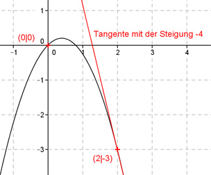

Aufgabe 1 Der Graph einer ganzrationalen Funktion 2. Grades geht durch die Punkte A(0|0) und B(2|-3) und hat in B eine Steigung von -4. Wie lautet seine Funktionsgleichung?  Allgemeine Form einer ganzrationalen Funktion 2. Grades: f(x) = ax² + bx + c f’(x) = 2ax + b f’’(x) = 2a 3 Bedingungen: 1. Geht durch den Punkt A(0|0) bedeutet: f(0) = 0 --> a * 0² + b * 0 + c --> c = 0 2. Geht durch den Punkt B(2|-3) bedeutet: f(2) = -3 --> a * 2² + b * 2 * 0 = -3 --> 4a + 2b = -3 I 3. Hat in B eine Steigung von -4 bedeutet: f’(2) = -4 --> 2a * 2 + b = -4 --> 4a + b = -4 II II * (-2) + I -8a - 2b = 8 4a + 2b = -3 ------------- -4a = 5 |:(-4) a = -1,25 In I eingesetzt: 4 * (-1,25) + 2b = -3 -5 + 2b = -3 |+5 2b = 2 |:2 b = 1 Gesuchte Funktionsgleichung: f(x) = -1,25x2 + x